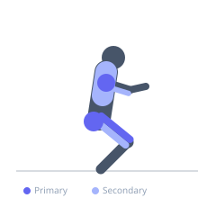
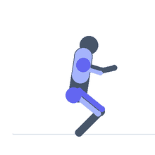

Exercise guide / Wall Ball
Wall Ball
Wall ball is a functional conditioning exercise in which the athlete performs a full squat holding a medicine ball and then uses the momentum of the squat ascent to propel the ball upward and throw it against a target on a wall, catching the rebounding ball to begin the next squat. It trains the full lower body squat pattern combined with an explosive upper body press in a continuous, high-intensity movement pattern, making it a staple of functional fitness conditioning workouts.
Primary muscles
rectus femoris
vastus lateralis
gluteus maximus
deltoid anterior
Secondary muscles
triceps long head
pectoralis major clavicular
biceps femoris long head
Stabilizers
transverse abdominis
erector spinae
Equipment
Medicine Ball


Starting position
- Stand facing a wall at approximately 1 meter distance, holding the medicine ball at chin height with both hands.
Setup
- Mark a target on the wall at the prescribed height (typically 3 meters for men, 2.7 meters for women in functional fitness standards). Use a soft medicine ball rated for wall-ball impact.
Steps
- Step 1: Hold the ball at chest/chin height, stand facing the wall.
- Step 2: Descend into a full squat — hip crease below the knee.
- Step 3: Drive out of the squat explosively, transferring momentum into the arms.
- Step 4: Push the ball upward and release it toward the wall target.
- Step 5: Catch the ball as it rebounds and absorb into the next squat immediately.
Coaching cues
- Squat deep — hip crease below the knee
- Drive up — throw at the top
- Catch and load — smooth transition
Breathing
- Exhale sharply at the top of the throw. Inhale on the descent.
Range of motion
- Full squat depth. Full overhead extension at ball release.
Tempo
- Performed for reps (10–30) or time (60–120 second intervals) in conditioning workouts.
Common mistakes
- Not reaching full squat depth — the hip crease must pass below the knee
- Throwing too early — the throw should be powered by the leg drive, not the arms alone
- Catching the ball with straight arms — absorb with slightly bent elbows
Safety
- Missing the catch can result in the ball dropping on the face or head — stay alert throughout.
- Adequate shoulder mobility for the overhead throw position.
Training
- endurance: 10–30 reps
- endurance: 3–6 sets
- Rest: {'endurance': 60}